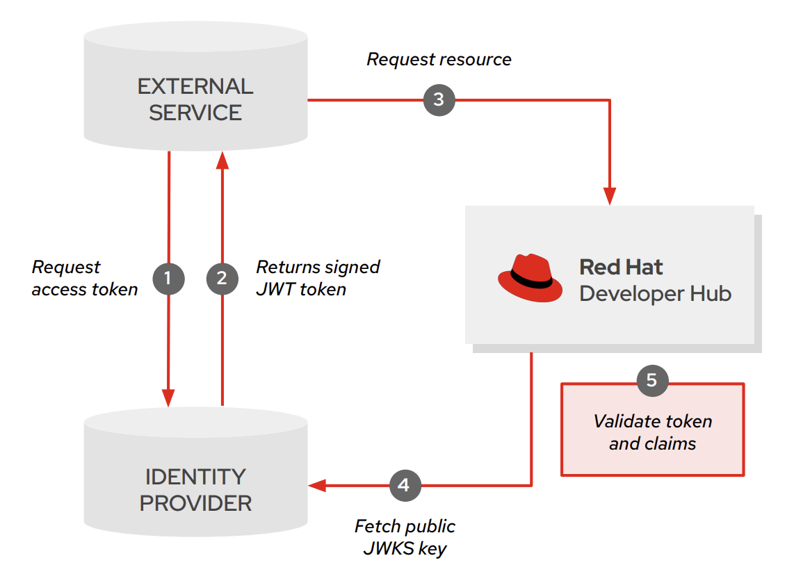

Authentication in Red Hat Developer Hub
Configuring authentication to external services in Red Hat Developer Hub
Abstract
- 1. Understand authentication and user provisioning
- 2. Enable or disable authentication with the Guest user
- 3. Enable authentication with Red Hat Build of Keycloak (RHBK)
- 3.1. Enable user authentication with Red Hat Build of Keycloak (RHBK), with optional steps
- 3.2. Enable user provisioning with LDAP
- 3.3. Create a custom transformer to provision users from Red Hat Build of Keycloak (RHBK) to the software catalog
- 3.4. Create a custom transformer to provision users from LDAP to the software catalog
- 4. Enable authentication with GitHub
- 5. Enable authentication with Microsoft Azure
- 6. Enable authentication with GitLab
- 7. Enable authentication with PingIdentity
- 8. Enable service-to-service authentication
- 9. Manage session expiration
- 10. Troubleshoot authentication issues
You can enable authentication in Red Hat Developer Hub to allow users to sign in using credentials from an external identity provider, such as RHBK, GitHub, or Microsoft Azure, and provision user and group data to the software catalog.
1. Understand authentication and user provisioning
User provisioning and authentication are two independent mechanisms in Red Hat Developer Hub. You can configure them separately depending on your requirements.
1.1. User provisioning
To fully enable catalog features, provision user and group data from an Identity Provider (IdP) to the Developer Hub software catalog. Catalog provider plugins handle this task asynchronously. These plugins query the IdP for relevant user and group information, and create or update corresponding entities in the Developer Hub catalog. Scheduled provisioning ensures that the catalog accurately reflects the users and groups in your organization.
You can provision users and groups from any supported source, including Red Hat Build of Keycloak (RHBK), GitHub, GitLab, Microsoft Azure, or LDAP. LDAP provisioning works independently of your authentication provider. Following associations are supported:
| User provisioning | Authentication |
|---|---|
|
RHBK |
RHBK |
|
LDAP |
RHBK |
|
GitHub |
GitHub |
|
Microsoft Azure |
Microsoft Azure |
For example, you can authenticate users with RHBK while provisioning user and group data from your LDAP directory.
Configuring user provisioning is critical for several reasons.
- Enabling authorization by allowing you to define access controls based on user and group memberships synchronized from your IdP.
Provisioning user and group data to the catalog is necessary for various catalog features that rely on understanding entity ownership and relationships between users, groups, and software components.
ImportantWithout this provisioning step, features such as displaying who owns a catalog entity might not function correctly.
To explore Developer Hub features in a non-production environment, you can:
- To use Developer Hub without external IdP, enable the guest user to skip configuring authentication and authorization, log in as the guest user, and access all Developer Hub features.
-
To use Developer Hub without authorization policies and features relying on the software catalog, you can enable the
dangerouslyAllowSignInWithoutUserInCatalogresolver option. This setting bypasses the check requiring a user to be in the catalog but still enforces authentication.
Developer Hub uses a one-way synchronization model, where user and group data flow from your Identity Provider to the Developer Hub software catalog. As a result, deleting users or groups manually through the Developer Hub Web UI or REST API might be ineffective or cause inconsistencies, since Developer Hub will create those entities again during the next import.
1.2. Authentication
When a user attempts to access Developer Hub, Developer Hub redirects them to a configured authentication provider, such as Red Hat Build of Keycloak (RHBK), GitHub, GitLab, or Microsoft Azure. This external IdP is responsible for authenticating the user.
On successful authentication, the Developer Hub authentication plugin, configured in your app-config.yaml file, processes the response from the IdP, resolves the identity in the Developer Hub software catalog, and establishes a user session within Developer Hub.
Authentication works independently of user provisioning. By default you cannot authenticate users without provisioning them to the software catalog. You can override this behavior to authenticate users without provisioning them to the software catalog, by using the dangerouslyAllowSignInWithoutUserInCatalog parameter. However, provisioning is a prerequisite for full catalog functionality, such as entity ownership and group-based access controls.
2. Enable or disable authentication with the Guest user
For trial or non-production environments, you can enable guest access to explore Developer Hub features without configuring authentication. For production environments, disable guest access to ensure security.
2.1. Enable the Guest login
To allow users to log in as a guest on the login page, enable the guest login option.
Procedure
In the
app-config.yamlfile, set the authentication environment todevelopment:auth: environment: development
- Restart the Developer Hub application to apply the changes.
Verification
- Go to the login page of your Developer Hub instance.
- Verify that the option to log in as a guest is available.
2.2. Disable the Guest login
To prevent users from logging in as a guest on the login page, disable the guest login option.
Procedure
In the
app-config.yamlfile, set the authentication environment toproduction:auth: environment: production
- Restart the Developer Hub application to apply the changes.
Verification
- Go to the login page of your Developer Hub instance.
- Verify that the option to log in as a guest is no longer available.
3. Enable authentication with Red Hat Build of Keycloak (RHBK)
You can enable authentication with RHBK to allow users to sign in to Developer Hub using their RHBK credentials and provision user and group data from RHBK or LDAP to the software catalog.
3.1. Enable user authentication with Red Hat Build of Keycloak (RHBK), with optional steps
Authenticate users with Red Hat Build of Keycloak by provisioning the users and groups from Red Hat Build of Keycloak to the Developer Hub software catalog, and configuring the Red Hat Build of Keycloak authentication provider in Red Hat Developer Hub.
Prerequisites
- You added a custom Developer Hub application configuration, and have enough permissions to change it.
- RHBK version 26.0.
You have access to RHBK with an admin user.
TipAlternatively, ask your RHBK administrator to prepare in RHBK the required realm and client.
Procedure
Register your Developer Hub app in RHBK:
Use an existing realm, or create a realm, with a distinctive Name such as <my_realm>. Save the value for the next step:
- RHBK realm base URL, such as: <your_rhbk_URL>/realms/<your_realm>.
To register your Developer Hub in RHBK, in the created realm, secure the first application, with:
- Client ID: A distinctive client ID, such as <RHDH>.
- Client authentication: Set to On (confidential access type).
- Service accounts roles: Enable Service accounts roles.
-
Valid redirect URIs: Set to the OIDC handler URL:
https://<my_developer_hub_domain>/api/auth/oidc/handler/frame. - Go to the Credentials tab and copy the Client secret.
Go to the Service accounts roles tab and click Assign role. Filter by client
realm-managementand assign the following roles:-
query-groups -
query-users -
view-users
-
Save the values for the next step:
- Client ID
- Client Secret
- To prepare for the verification steps, in the same realm, get the credential information for an existing user or create a user. Save the user credential information for the verification steps.
- Create a long, complex, and unique string to use as the Developer Hub session secret key.
Add your RHBK credentials and the session secret key to Developer Hub, by adding the following key-value pairs to your Developer Hub secrets. You can use these secrets in the Developer Hub configuration files by using their environment variable name.
KEYCLOAK_CLIENT_ID- Enter the saved Client ID.
KEYCLOAK_CLIENT_SECRET- Enter the saved Client Secret.
KEYCLOAK_BASE_URL- Enter the saved RHBK realm base URL.
KEYCLOAK_REALM- Enter the realm name to provision users.
KEYCLOAK_LOGIN_REALM- Enter the realm name to authenticate users.
SESSION_SECRET- Enter the created session secret key.
Enable the Keycloak catalog provider plugin in your
dynamic-plugins.yamlfile.The plugin is named after RHBK upstream project.
This plugin imports RHBK users and groups to the Developer Hub software catalog.
plugins: - package: './dynamic-plugins/dist/backstage-community-plugin-catalog-backend-module-keycloak-dynamic' disabled: falseThe OIDC provider authentication backend plugin requires Developer Hub to support sessions. Enable session support by adding the session secret to your
app-config.yamlfile:auth: session: secret: ${SESSION_SECRET}Enable provisioning RHBK users and groups to the Developer Hub software catalog, by adding the
catalog.providers.keycloakOrgsection to yourapp-config.yamlfile:catalog: providers: keycloakOrg: default: baseUrl: ${KEYCLOAK_BASE_URL} clientId: ${KEYCLOAK_CLIENT_ID} clientSecret: ${KEYCLOAK_CLIENT_SECRET} realm: ${KEYCLOAK_REALM} loginRealm: ${KEYCLOAK_LOGIN_REALM}baseUrl- Enter your RHBK server URL, defined earlier.
clientId- Enter your Developer Hub application client ID in RHBK, defined earlier.
clientSecret- Enter your Developer Hub application client secret in RHBK, defined earlier.
realm- Enter the realm name to provision users.
loginRealm- Enter the realm name to authenticate users. :_mod-docs-content-type: SNIPPET
Optional: Add optional fields to the
keycloackOrgcatalog provider section in yourapp-config.yamlfile:catalog: providers: keycloakOrg: default: baseUrl: ${KEYCLOAK_BASE_URL} clientId: ${KEYCLOAK_CLIENT_ID} clientSecret: ${KEYCLOAK_CLIENT_SECRET} realm: ${KEYCLOAK_REALM} loginRealm: ${KEYCLOAK_LOGIN_REALM} userQuerySize: 100 groupQuerySize: 100 schedule: frequency: { hours: 1 } timeout: { minutes: 50 } initialDelay: { seconds: 15}userQuerySize-
Enter the user count to query simultaneously. Default value:
100. groupQuerySize-
Enter the group count to query simultaneously. Default value:
100. schedulefrequency- Enter the schedule frequency. Supports cron, ISO duration, and "human duration" as used in code.
timeout- Enter the timeout for the user provisioning job. Supports ISO duration and "human duration" as used in code.
initialDelay- Enter the initial delay to wait for before starting the user provisioning job. Supports ISO duration and "human duration" as used in code. :_mod-docs-content-type: SNIPPET
Enable the RHBK authentication provider, by adding the OIDC provider section in your
app-config.yamlfile:auth: environment: production providers: oidc: production: metadataUrl: ${KEYCLOAK_BASE_URL} clientId: ${KEYCLOAK_CLIENT_ID} clientSecret: ${KEYCLOAK_CLIENT_SECRET} prompt: auto signInPage: oidcImportantThe environment key under the provider (for example,
production) must match the value of theenvironmentfield underauth. Developer Hub cannot find a complete configuration set in mismatched environments.environment: production-
Mark the environment as
productionto hide the Guest login in the Developer Hub home page. metadataUrl,clientId,clientSecret- Configure the OIDC provider with your secrets.
promptEnter
autoto allow the identity provider to automatically determine whether to prompt for credentials or bypass the login redirect if an active RHBK session exists.The identity provider defaults to
none, which assumes that you are already logged in. Sign-in requests without an active session are rejected.signInPage-
Enter
oidcto enable the OIDC provider as default sign-in provider. :_mod-docs-content-type: SNIPPET
Optional: Add optional fields to the OIDC authentication provider section in your
app-config.yamlfile:auth: providers: oidc: production: metadataUrl: ${KEYCLOAK_BASE_URL} clientId: ${KEYCLOAK_CLIENT_ID} clientSecret: ${KEYCLOAK_CLIENT_SECRET} callbackUrl: ${KEYCLOAK_CALLBACK_URL} tokenEndpointAuthMethod: ${KEYCLOAK_TOKEN_ENDPOINT_METHOD} tokenSignedResponseAlg: ${KEYCLOAK_SIGNED_RESPONSE_ALG} additionalScopes: ${KEYCLOAK_SCOPE} signIn: resolvers: - resolver: oidcSubClaimMatchingKeycloakUserId - resolver: preferredUsernameMatchingUserEntityName - resolver: emailMatchingUserEntityProfileEmail - resolver: emailLocalPartMatchingUserEntityName dangerouslyAllowSignInWithoutUserInCatalog: true sessionDuration: { hours: 24 } backstageTokenExpiration: { minutes: _<user_defined_value>_ } signInPage: oidccallbackUrl- RHBK callback URL.
tokenEndpointAuthMethod- Enter your token endpoint authentication method.
tokenSignedResponseAlg- Token signed response algorithm.
additionalScopes- Enter additional RHBK scopes to request for during the authentication flow.
signInresolversAfter successful authentication, the user signing in must be resolved to an existing user in the Developer Hub catalog. To best match users securely for your use case, consider configuring a specific resolver.
Enter the resolver list to override the default resolver:
oidcSubClaimMatchingKeycloakUserId.Available values:
oidcSubClaimMatchingKeycloakUserId-
Matches the user with the immutable
subparameter from OIDC to the RHBK user ID. Consider using this resolver for enhanced security. emailLocalPartMatchingUserEntityName- Matches the email local part with the user entity name.
emailMatchingUserEntityProfileEmail- Matches the email with the user entity profile email.
preferredUsernameMatchingUserEntityNameMatches the preferred username with the user entity name.
The authentication provider tries each sign-in resolver in order until it succeeds, and fails if none succeed.
WarningIn production mode, configure only one resolver to make sure users are securely matched.
dangerouslyAllowSignInWithoutUserInCatalog: trueConfigure the sign-in resolver to bypass the user provisioning requirement in the Developer Hub software catalog.
WarningIn production mode, do not enable the
dangerouslyAllowSignInWithoutUserInCatalogoption.
sessionDuration-
Lifespan of the user session. Enter a duration in
mslibrary format (such as '24h', '2 days'), ISO duration, or "human duration" as used in code. backstageTokenExpirationEnter a value to modify the Developer Hub token expiration from its default value of one hour. It refers to the validity of short-term cryptographic tokens, not to the session duration. The expiration value must be set between 10 minutes and 24 hours.
WarningIf multiple valid refresh tokens are issued due to frequent refresh token requests, older tokens will remain valid until they expire. Enhance security and prevent potential misuse of older tokens by enabling a refresh token rotation strategy in your RHBK realm.
- From the Configure section of the navigation menu, click Realm Settings.
- From the Realm Settings page, click the Tokens tab.
- From the Refresh tokens section of the Tokens tab, toggle the Revoke Refresh Token to the Enabled position.
To disable the guest login option, in the
app-config.yamlfile, set the authentication environment toproduction:auth: environment: production
Verification
To verify user and group provisioning, check the console logs.
Successful synchronization example:
2025-06-27T16:02:34.647Z catalog info Read 5 Keycloak users and 3 Keycloak groups in 0.4 seconds. Committing... class="KeycloakOrgEntityProvider" taskId="KeycloakOrgEntityProvider:default:refresh" taskInstanceId="db55c34b-46b3-402b-b12f-2fbc48498e82" trace_id="606f80a9ce00d1c86800718c4522f7c6" span_id="7ebc2a254a546e90" trace_flags="01" 2025-06-27T16:02:34.650Z catalog info Committed 5 Keycloak users and 3 Keycloak groups in 0.0 seconds. class="KeycloakOrgEntityProvider" taskId="KeycloakOrgEntityProvider:default:refresh" taskInstanceId="db55c34b-46b3-402b-b12f-2fbc48498e82" trace_id="606f80a9ce00d1c86800718c4522f7c6" span_id="7ebc2a254a546e90" trace_flags="01"
To verify RHBK user authentication:
- Go to the Developer Hub login page.
- Your Developer Hub sign-in page displays Sign in using OIDC and the Guest user sign-in is disabled.
- Log in with OIDC by using the saved Username and Password values.
3.2. Enable user provisioning with LDAP
You can provision users and groups from a Lightweight Directory Access Protocol (LDAP) directory directly to the Red Hat Developer Hub software catalog.
LDAP provisioning works with any authentication provider. You do not need Red Hat Build of Keycloak (RHBK) to use LDAP for user and group provisioning. For example, you can authenticate users with GitHub or Microsoft Azure while provisioning user and group data from your LDAP directory.
Prerequisites
- You have configured authentication with a supported provider, such as Red Hat Build of Keycloak (RHBK), GitHub, Microsoft Azure, or GitLab.
You have collected the required LDAP credentials:
- LDAP URL
-
Your LDAP server URL, such as
ldaps://ds.example.net. - Bind dn
-
Your bind distinguished name, such as
cn=admin,OU=Users,DC=rhdh,DC=test - LDAP secret
- Your LDAP secret.
- Recommended: LDAP certificates and keys
To use a secure LDAP connection (
ldaps://): you stored your LDAP certificates in theldap_certs.pemfile and your LDAP keys in theldap_keys.pemfile.WarningIn production mode, use a secure LDAP connection.
Procedure
Enter your LDAP credentials to Developer Hub, by adding the
LDAP_SECRETenvironment variable to your Developer Hub secrets.$ oc patch secret my-rhdh-secrets --patch '{"stringData": { "LDAP_SECRET": "<ldap_secret>" }}'- <ldap_secret>
- Enter your LDAP secret.
Recommended: To use a secure LDAP connection (
ldaps://), add your LDAP certificates and keys files to a {a-platform-generic} secret.$ oc create secret generic my-rhdh-ldap-secrets \ --from-file=./ldap_certs.pem \ --from-file=./ldap_keys.pemEnable the LDAP catalog provider plugin in your
dynamic-plugins.yamlfile.plugins: - package: './dynamic-plugins/dist/backstage-plugin-catalog-backend-module-ldap-dynamic' disabled: falseEnable provisioning LDAP users and groups to the Developer Hub software catalog, by adding the LDAP catalog provider section to your
app-config.yamlfile:- Optional: Remove other catalog providers, by removing the other catalog providers section.
Enter the mandatory fields:
catalog: providers: ldapOrg: default: target: ldaps://ds.example.net bind: dn: cn=admin,ou=Users,dc=rhdh secret: ${LDAP_SECRET} users: - dn: OU=Users,OU=RHDH Local,DC=rhdh,DC=test options: filter: (uid=*) groups: - dn: OU=Groups,OU=RHDH Local,DC=rhdh,DC=test schedule: frequency: PT1H timeout: PT15Mtarget-
Enter your LDAP server URL, such as
ldaps://ds.example.net. bindEnter your service account information:
dn-
Enter your service account distinguished name (DN), such as
cn=admin,OU=Users,DC=rhdh,DC=test secret-
Enter the name of the variable containing your LDAP secret:
${LDAP_SECRET}.
usersEnter information about how to find your users:
dn- Enter the DN containing the user information.
optionsfilter-
Enter your filter, such as
(uid=*)to provision to the RHDH software catalog only users with an existinguid.
groupsEnter information about how to find your groups:
dn- Enter the DN containing the group information.
scheduleEnter your schedule information:
frequency- Enter your schedule frequency, in the cron, ISO duration, or "human duration" format.
timeout- Enter your schedule timeout, in the ISO duration or "human duration" format.
initialDelay- Enter your schedule initial delay, in the ISO duration or "human duration" format.
Optional: To change how Developer Hub maps LDAP user fields to the software catalog, enter optional
mapsandsetfields.catalog: providers: ldapOrg: default: target: ldaps://ds.example.net bind: dn: cn=admin,ou=Users,dc=rhdh secret: ${LDAP_SECRET} users: - dn: OU=Users,OU=RHDH Local,DC=rhdh,DC=test options: filter: (uid=*) map: rdn: uid name: uid description: {} displayName: cn email: mail picture: {} memberOf: memberOf set: metadata.customField: 'hello' groups: - dn: OU=Groups,OU=RHDH Local,DC=rhdh,DC=test schedule: frequency: PT1H timeout: PT15Mrdn-
To change the default value:
uid, enter the relative distinguished name of each entry. name-
To change the default value:
uid, enter the LDAP field to map to the RHDHmetadata.namefield. description-
To set a value, enter the LDAP field to map to the RHDH
metadata.descriptionfield. displayName-
To change the default value:
cn, enter the LDAP field to map to the RHDHmetadata.displayNamefield. email-
To change the default value:
mail, enter the LDAP field to map to the RHDHspec.profile.emailfield. picture-
To set a value, enter the LDAP field to map to the RHDH
spec.profile.picturefield. memberOf-
To change the default value:
memberOf, enter the LDAP field to map to the RHDHspec.memberOffield. set-
To set a value, enter the hard coded JSON to apply to the entities after ingestion, such as
metadata.customField: 'hello'.
Optional: To change how Developer Hub maps LDAP group fields to the software catalog, enter optional
groups.mapsfields.catalog: providers: ldapOrg: default: target: ldaps://ds.example.net bind: dn: cn=admin,ou=Users,dc=rhdh secret: ${LDAP_SECRET} users: - dn: OU=Users,OU=RHDH Local,DC=rhdh,DC=test options: filter: (uid=*) groups: - dn: OU=Groups,OU=RHDH Local,DC=rhdh,DC=test map: rdn: uid name: uid description: {} displayName: cn email: mail picture: {} memberOf: memberOf members: member type: groupType set: metadata.customField: 'hello' schedule: frequency: PT1H timeout: PT15Mrdn-
To change the default value:
cn, enter the relative distinguished name of each entry. name-
To change the default value:
cn, enter the LDAP field to map to the RHDHmetadata.namefield. description-
To set a value, enter the LDAP field to map to the RHDH
metadata.descriptionfield. displayName-
To change the default value:
cn, enter the LDAP field to map to the RHDHmetadata.displayNamefield. email-
To change the default value:
mail, enter the LDAP field to map to the RHDHspec.profile.emailfield. picture-
To set a value, enter the LDAP field to map to the RHDH
spec.profile.picturefield. memberOf-
To change the default value:
memberOf, enter the LDAP field to map to the RHDHspec.memberOffield. members-
To change the default value:
member, enter the LDAP field to map to the RHDHspec.childrenfield. type-
To change the default value:
groupType, enter the LDAP field to map to the RHDHspec.typefield. set-
To set a value, enter the hard coded JSON to apply to the entities after ingestion, such as
metadata.customField: 'hello'.
Recommended: To use a secure LDAP connection (
ldaps://), enter optionaltlsfields.catalog: providers: ldapOrg: default: target: ldaps://ds.example.net bind: dn: cn=admin,ou=Users,dc=rhdh secret: ${LDAP_SECRET} users: ldapOrg: default: tls: rejectUnauthorized: true keys: '/path/to/keys.pem' certs: '/path/to/certs.pem'rejectUnauthorizedSet to
falseto allow self-signed certificatesWarningThis option is not recommended for production.
keys- Enter a file containing private keys in PEM format
certs- Enter a file containing cert chains in PEM format
Optional: Enter configuration for vendor-specific attributes to set custom attribute names for distinguished names (DN) and universally unique identifiers (UUID) in LDAP directories. Default values are defined per supported vendor and automatically detected.
catalog: providers: ldapOrg: default: vendor: dnAttributeName: customDN uuidAttributeName: customUUIDdnAttributeName- Enter the attribute name that holds the distinguished name (DN) for an entry.
uuidAttributeName- Enter the attribute name that holds a universal unique identifier (UUID) for an entry.
Optional: Enter low level users and groups configuration in the
optionssubsection.catalog: providers: ldapOrg: default: target: ldaps://ds.example.net bind: dn: cn=admin,ou=Users,dc=rhdh secret: ${LDAP_SECRET} users: options: scope: sub filter: (uid=*) attributes: - cn - uid - description paged: pageSize: 500 groups: options: scope: sub filter: (cn=*) attributes: - cn - uid - description paged: pageSize: 500 pagePause: truescope-
To change the default value:
one, enter how deep the search should go within the directory tree:
-
baseto search only the base DN. -
oneto search one level below the base DN. subto search all descendant entries.filter-
To change the default value:
(objectclass=*), enter your LDAP filter. With the default mapping:
-
For users, enter
(uid=*)to make sure only users with valid uid field is synced, since users without uid will cause error and ingestion fails. For groups, enter
(cn=*)TipWhen you change the mapping, also update the filter.
attributes-
To change the default value: all attributes
['*', '+'], enter the array of attribute names to import from LDAP. pagedEnter a value to enable paged results.
pageSize-
Enter a value to set the results page size, such as
500. pagePause-
Enter
trueto tell the client to wait for the asynchronous results of the next page, when the page limit has been reached.
Recommended: To use a secure LDAP connection (
ldaps://), mount your LDAP certificates and keys files in your Developer Hub deployment, by editing your Backstage custom resource.kind: Backstage spec: application: extraFiles: mountPath: /opt/ldap-secrets secrets: - name: my-rhdh-database-database-secrets key: ldap-certs.pem, ldap-keys.pem
Verification
To verify user and group provisioning, check the console logs.
Successful synchronization example:
2025-10-15T20:45:49.072Z catalog info Read 4 LDAP users and 6 LDAP groups in 0.3 seconds. Committing... class="LdapOrgEntityProvider" taskId="LdapOrgEntityProvider:default:refresh" taskInstanceId="9bb48fd5-2f55-4096-9fd0-61cee6679952" trace_id="6a318e2eadba84e20df773948668aa4c" span_id="cbec568cb6e64985" trace_flags="01" 2025-10-15T20:45:49.075Z catalog info Committed 4 LDAP users and 6 LDAP groups in 0.0 seconds. class="LdapOrgEntityProvider" taskId="LdapOrgEntityProvider:default:refresh" taskInstanceId="9bb48fd5-2f55-4096-9fd0-61cee6679952" trace_id="6a318e2eadba84e20df773948668aa4c" span_id="cbec568cb6e64985" trace_flags="01"
3.3. Create a custom transformer to provision users from Red Hat Build of Keycloak (RHBK) to the software catalog
Customize how Red Hat Developer Hub provisions users and groups to Developer Hub software catalog entities, by creating a backend module that uses the keycloakTransformerExtensionPoint to offer custom user and group transformers for the Keycloak backend.
Prerequisites
Procedure
Create a new backend module with the
yarn newcommand.$ yarn new ? What type of module would you like to create? backend-plugin-module ? Enter the ID of the plugin [required] catalog ? Enter the ID of the module [required] keycloak-org-transformer
The command creates a plugin named
catalog-backend-module-keycloak-org-transformer.Install required packages:
$ yarn --cwd plugins/catalog-backend-module-keycloak-org-transformer add @backstage/plugin-catalog-backend-module-keycloak-org
-
Refer to the sample plugin and implement
plugins/catalog-backend-module-keycloak-org-transformer/src/module.ts. Package and export the plugin as a Dynamic Plugin, and embed the required package for the custom transformer.
$ npx @red-hat-developer-hub/cli@latest plugin export \ --embed-package @backstage/plugin-catalog-backend-module-keycloak-org
ImportantVerify that the installed plugin version is compatible with the Backstage version.
See the Dynamic plugins reference for the version to import.
- Publish and enable the plugin in Developer Hub. For more information, see Installing and viewing plugins in Red Hat Developer Hub.
Verification
Every time that Developer Hub starts, it imports the users and groups. Check the console logs to verify the synchronization result.
Successful synchronization example:
{"class":"KeycloakOrgEntityProvider","level":"info","message":"Read 3 Keycloak users and 2 Keycloak groups in 1.5 seconds. Committing...","plugin":"catalog","service":"backstage","taskId":"KeycloakOrgEntityProvider:default:refresh","taskInstanceId":"bf0467ff-8ac4-4702-911c-380270e44dea","timestamp":"2024-09-25 13:58:04"} {"class":"KeycloakOrgEntityProvider","level":"info","message":"Committed 3 Keycloak users and 2 Keycloak groups in 0.0 seconds.","plugin":"catalog","service":"backstage","taskId":"KeycloakOrgEntityProvider:default:refresh","taskInstanceId":"bf0467ff-8ac4-4702-911c-380270e44dea","timestamp":"2024-09-25 13:58:04"}- After the first import is complete, go to the Catalog page and select User to view the list of users.
- When you select a user, you see the information imported from RHBK. Verify that the user entities reflect the custom transformations you defined in the plugin.
- You can select a group, view the list, and access or review the information imported from RHBK. Verify that the group entities reflect the custom transformations you defined in the plugin.
- You can log in with an RHBK account.
3.4. Create a custom transformer to provision users from LDAP to the software catalog
Customize how Red Hat Developer Hub provisions users and groups to Developer Hub software catalog entities, by creating a backend module plugin that uses the ldapOrgEntityProviderTransformsExtensionPoint to offer custom user and group transformers for the LDAP backend.
Prerequisites
Procedure
Create a new backend module:
$ yarn new ? What type of module would you like to create? backend-plugin-module ? Enter the ID if the plugin [required]? catalog ? Enter the ID of the module [required]? ldap-transformer
The command creates a plugin named
catalog-backend-module-ldap-transformer.Install required packages:
$ yarn --cwd plugins/catalog-backend-module-ldap-transformer add @backstage/plugin-catalog-backend-module-ldap
-
Refer to the sample plugin and implement
plugins/catalog-backend-module-ldap-transformer/src/module.ts. Package and export the plugin as a Dynamic Plugin, and embed the required package for the custom transformer.
$ npx @red-hat-developer-hub/cli@latest plugin export \ --embed-package @backstage/plugin-catalog-backend-module-ldap
ImportantVerify that the installed plugin version is compatible with the Backstage version.
See the Dynamic plugins reference for the version to import.
- Publish and enable the plugin in Developer Hub. For more information, see Installing and viewing plugins in Red Hat Developer Hub.
Verification
- Every time that Developer Hub starts, it imports the users and groups. Check the console logs to verify the synchronization result.
- After the first import is complete, go to the Catalog page and select User to view the list of users.
- When you select a user, you see the information imported from LDAP. Verify that the user entities reflect the custom transformations you defined in the plugin.
- You can select a group, view the list, and access or review the information imported from LDAP. Verify that the group entities reflect the custom transformations you defined in the plugin.
- You can log in with an LDAP account.
4. Enable authentication with GitHub
You can enable authentication with GitHub to allow users to sign in to Developer Hub using their GitHub credentials and provision user and group data to the software catalog.
4.1. Enable user authentication with GitHub, with optional steps
Authenticate users with GitHub by provisioning the users and groups from GitHub to the Developer Hub software catalog, and configuring the GitHub authentication provider in Red Hat Developer Hub.
Prerequisites
You have enough permissions in GitHub to create and manage a GitHub App.
TipAlternatively, ask your GitHub administrator to prepare the required GitHub App.
- You have added a custom Developer Hub application configuration, and have enough permissions to change it.
Procedure
Allow Developer Hub to authenticate with GitHub, by creating a GitHub App.
NoteUse a GitHub App instead of an OAuth app to use fine-grained permissions, use short-lived tokens, scale with the number of installations by avoiding rate limits, and have a more transparent integration by avoiding to request user input.
Register a GitHub App with the following configuration:
- GitHub App name
-
Enter a unique name identifying your GitHub App, such as
authenticating-with-rhdh-<GUID>. - Homepage URL
-
Enter your Developer Hub URL:
https://<my_developer_hub_domain>. - Authorization callback URL
-
Enter your Developer Hub authentication backend URL:
https://<my_developer_hub_domain>/api/auth/github/handler/frame. - Webhook
- Clear "Active".
- Organization permissions
-
Enable
Read-onlyaccess to Members. - Where can this GitHub App be installed?
-
Select
Only on this account.
- In the General → Clients secrets section, click Generate a new client secret.
- In the Install App tab, choose an account to install your GitHub App on.
Save the following values for the next step:
- Client ID
- Client secret
Add your GitHub credentials to Developer Hub by adding the following key/value pairs to your Developer Hub secrets. You can use these secrets in the Developer Hub configuration files by using their environment variable name.
GITHUB_CLIENT_ID- Enter the saved Client ID.
GITHUB_CLIENT_SECRET- Enter the saved Client Secret.
GITHUB_URL-
Enter the GitHub host domain:
https://github.com. GITHUB_ORG-
Enter your GitHub organization name, such as
<your_github_organization_name>.
Enable the GitHub catalog provider plugin in your
dynamic-plugins.yamlfile to import GitHub users and groups to the Developer Hub software catalog.plugins: - package: './dynamic-plugins/dist/backstage-plugin-catalog-backend-module-github-org-dynamic' disabled: falseEnable provisioning GitHub users and groups to the Developer Hub software catalog by adding the GitHub catalog provider section to your
app-config.yamlfile:catalog: providers: githubOrg: id: githuborg githubUrl: "${GITHUB_URL}" orgs: [ "${GITHUB_ORG}" ] schedule: frequency: minutes: 30 initialDelay: seconds: 15 timeout: minutes: 15idEnter a stable identifier for this provider, such as
githuborg.WarningEntities from this provider are associated with this identifier. Therefore, do not to change the identifier over time since that might lead to orphaned entities or conflicts.
githubUrl-
Enter the configured secret variable name:
${GITHUB_URL}. orgs-
Enter the configured secret variable name:
${GITHUB_ORG}. schedule.frequency- Enter your schedule frequency, in the cron, ISO duration, or "human duration" format.
schedule.timeout- Enter your schedule timeout, in the ISO duration or "human duration" format.
schedule.initialDelay- Enter your schedule initial delay, in the ISO duration or "human duration" format.
Enable the GitHub authentication provider, by adding the GitHub authentication provider section to your
app-config.yamlfile:auth: environment: production providers: github: production: clientId: ${GITHUB_CLIENT_ID} clientSecret: ${GITHUB_CLIENT_SECRET} signInPage: githubImportantThe environment key under the provider (for example,
production) must match the value of theenvironmentfield underauth. Developer Hub cannot find a complete configuration set in mismatched environments.environment-
Enter
productionto disable the Guest login option in the Developer Hub login page. clientId-
Enter the configured secret variable name:
${GITHUB_CLIENT_ID}. clientSecret-
Enter the configured secret variable name:
${GITHUB_CLIENT_SECRET}. signInPage-
Enter
githubto enable the GitHub provider as your Developer Hub sign-in provider. :_mod-docs-content-type: SNIPPET
Optional: Add optional fields to the GitHub authentication provider section in your
app-config.yamlfile:auth: environment: production providers: github: production: clientId: ${GITHUB_CLIENT_ID} clientSecret: ${GITHUB_CLIENT_SECRET} callbackUrl: <your_intermediate_service_url/handler> sessionDuration: { hours: 24 } signIn: resolvers: - resolver: usernameMatchingUserEntityName dangerouslyAllowSignInWithoutUserInCatalog: true signInPage: githubcallbackUrl- Enter the callback URL that GitHub uses when initiating an OAuth flow, such as: <your_intermediate_service_url/handler>. Define it when Developer Hub is not the immediate receiver, such as in cases when you use one OAuth app for many Developer Hub instances.
sessionDuration-
Enter the user session lifespan, in
mslibrary format (such as '24h', '2 days'), ISO duration, or "human duration". signInresolvers- After successful authentication, Developer Hub resolves the user signing in to an existing user in the Developer Hub catalog. Configure a specific resolver to best match users securely for your use case..
Enter the resolver list to override the default resolver:
usernameMatchingUserEntityName.The authentication provider tries each sign-in resolver in order until it succeeds. If none of the attempts succeed, the sign-in fails.
WarningIn production mode, configure only one resolver to make sure users are securely matched.
resolverEnter the sign-in resolver name. Available resolvers:
-
usernameMatchingUserEntityName -
emailLocalPartMatchingUserEntityName -
emailMatchingUserEntityProfileEmail
-
dangerouslyAllowSignInWithoutUserInCatalogEnter
trueto configure the sign-in resolver to bypass the user provisioning requirement in the Developer Hub software catalog.WarningIn production mode, do not enable
dangerouslyAllowSignInWithoutUserInCatalog.
To disable the guest login option, in the
app-config.yamlfile, set the authentication environment toproduction:auth: environment: production
Verification
Verify user and group provisioning by checking the console logs.
Successful synchronization example:
{"class":"GithubMultiOrgEntityProvider","level":"info","message":"Reading GitHub users and teams for org: rhdh-dast","plugin":"catalog","service":"backstage","target":"https://github.com","taskId":"GithubMultiOrgEntityProvider:githuborg:refresh","taskInstanceId":"801b3c6c-167f-473b-b43e-e0b4b780c384","timestamp":"2024-09-09 23:55:58"} {"class":"GithubMultiOrgEntityProvider","level":"info","message":"Read 7 GitHub users and 2 GitHub groups in 0.4 seconds. Committing...","plugin":"catalog","service":"backstage","target":"https://github.com","taskId":"GithubMultiOrgEntityProvider:githuborg:refresh","taskInstanceId":"801b3c6c-167f-473b-b43e-e0b4b780c384","timestamp":"2024-09-09 23:55:59"}To verify GitHub authentication:
- Go to the Developer Hub login page.
- Your Developer Hub sign-in page displays Sign in using GitHub and the Guest user sign-in is disabled.
- Log in with a GitHub account.
4.2. Enable user authentication with GitHub as an auxiliary authentication provider
If your primary authentication provider is not GitHub, you can configure GitHub as an auxiliary provider to grant users the GitHub permissions needed for templates or plugins, without re-resolving user identities.
Prerequisites
You have enough permissions in GitHub to create and manage a GitHub App.
TipAlternatively, ask your GitHub administrator to prepare the required GitHub App.
- You have added a custom Developer Hub application configuration, and have enough permissions to change it.
- You have configured a primary authentication provider to provision user and group identities to the Red Hat Developer Hub software catalog, and establish Developer Hub user sessions.
Procedure
Add the
auth.providers.githubsection to yourapp-config.yamlfile:auth: providers: github: production: clientId: ${GITHUB_CLIENT_ID} clientSecret: ${GITHUB_CLIENT_SECRET} disableIdentityResolution: truewhere:
clientId:: Enter the configured secret variable name:${GITHUB_CLIENT_ID}.clientSecret-
Enter the configured secret variable name:
${GITHUB_CLIENT_SECRET}. disableIdentityResolutionEnter
trueto skip user identity resolution for this provider to enable sign-in from an auxiliary authentication provider.WarningDo not enable this setting on the primary authentication provider you plan on using for sign-in and identity management.
To disable the guest login option, in the
app-config.yamlfile, set the authentication environment toproduction:auth: environment: production
Verification
- Go to the Developer Hub login page.
- Log in with your primary authentication provider account.
- In the top user menu, go to Settings > Authentication Providers.
- In the GitHub line, click the Sign in button and log in.
- In the GitHub line, the button displays Sign out.
Additional resources
4.3. Create a custom transformer to provision users from GitHub to the software catalog
Customize how Red Hat Developer Hub provisions users and groups to Developer Hub software catalog entities, by creating a backend module plugin that uses the githubOrgEntityProviderTransformsExtensionPoint to offer custom user and group transformers for the GitHub backend.
Prerequisites
Procedure
Create a new backend module:
$ yarn new ? What type of module would you like to create? backend-plugin-module ? Enter the ID if the plugin [required]? catalog ? Enter the ID of the module [required]? github-org-transformer
The command creates a plugin named
catalog-backend-module-github-org-transformer.Install required packages:
$ yarn --cwd plugins/catalog-backend-module-github-org-transformer add @backstage/plugin-catalog-backend-module-github-org
(Optional) Install recommended packages to extend the default transformers or Transformer type checking:
$ yarn --cwd plugins/catalog-backend-module-github-org-transformer add @backstage/plugin-catalog-backend-module-github
(Optional) Install recommended packages for
UserEntityorGroupEntitytype checking:$ yarn --cwd plugins/catalog-backend-module-github-org-transformer add @backstage/catalog-model
-
Refer to the sample plugin and implement your custom
plugins/catalog-backend-module-github-org-transformer/src/module.tsand make your required transformations to user and group entities. Package and export the plugin as a Dynamic Plugin, and embed the required package for the custom transformer.
$ npx @red-hat-developer-hub/cli@latest plugin export \ --embed-package @backstage/plugin-catalog-backend-module-github \ --embed-package @backstage/plugin-catalog-backend-module-github-org
ImportantVerify that the installed plugin version is compatible with the Backstage version.
See the Dynamic plugins reference for the version to import.
- Publish and enable the plugin in Developer Hub. For more information, see Installing and viewing plugins in Red Hat Developer Hub.
Verification
- Every time that Developer Hub starts, it imports the users and groups. Check the console logs to verify the synchronization result.
- After the first import is complete, go to the Catalog page and select User to view the list of users.
- When you select a user, you see the information imported from GitHub. Verify that the user entities reflect the custom transformations you defined in the plugin.
- You can select a group, view the list, and access or review the information imported from GitHub. Verify that the group entities reflect the custom transformations you defined in the plugin.
- You can log in with a GitHub account.
5. Enable authentication with Microsoft Azure
You can enable authentication with Microsoft Azure to allow users to sign in to Developer Hub using their Microsoft Azure credentials and provision user and group data to the software catalog.
5.1. Enable user authentication with Microsoft Azure, with optional steps
Authenticate users with Microsoft Azure by provisioning the users and groups from Microsoft Azure to the Developer Hub software catalog, and configuring the Microsoft Azure authentication provider in Red Hat Developer Hub.
Prerequisites
You have the permission to register an application in Azure.
TipAlternatively, ask your Azure administrator to prepare the required Azure application.
- You added a custom Developer Hub application configuration, and have enough permissions to change it.
Your Developer Hub backend can access the following hosts:
login.microsoftonline.com- The Microsoft Azure authorization server, which enables the authentication flow.
graph.microsoft.com- The server for retrieving organization data, including user and group data, to import into the Developer Hub catalog.
Procedure
Register your Developer Hub app in Azure, by using the Azure portal.
- Sign in to the Microsoft Entra admin center.
- Optional: If you have access to multiple tenants, use the Settings icon in the top menu to switch to the tenant in which you want to register the application from the Directories + subscriptions menu.
Browse to Applications > App registrations, and create a New registration with the configuration:
- Name
- Enter a name to identify your application in Azure, such as <Authenticating with Developer Hub>.
- Supported account types
- Select Accounts in this organizational directory only.
- Redirect URI
- Select a platform
- Select Web.
- URL
-
Enter the backend authentication URI set in Developer Hub:
https://<my_developer_hub_domain>/api/auth/microsoft/handler/frame
On the Applications > App registrations > <Authenticating with Developer Hub> > Manage > API permissions page, Add a Permission, Microsoft Graph, select the following permissions:
- Application Permissions
GroupMember.Read.All,User.Read.AllEnter permissions that enable provisioning user and groups to the Developer Hub software catalog.
Optional: Grant admin consent for these permissions. Even if your company does not require admin consent, consider doing so as it means users do not need to individually consent the first time they access Developer Hub.
- Delegated Permissions
User.Read,email,offline_access,openid,profileEnter permissions that enable authenticating users.
Optional: Enter optional custom scopes for the Microsoft Graph API that you define both here and in your
app-config.yamlDeveloper Hub configuration file.
- On the Applications > App registrations > <Authenticating with Developer Hub> > Manage > Certificates & secrets page, in the Client secrets tab, create a New client secret.
Save the following values for the next step:
- Directory (tenant) ID
- Application (client) ID
- Application (client) Secret ID
Add your Azure credentials to Developer Hub, by adding the following key/value pairs to your Developer Hub secrets:
MICROSOFT_TENANT_ID- Enter your saved Directory (tenant) ID.
MICROSOFT_CLIENT_ID- Enter your saved Application (client) ID.
MICROSOFT_CLIENT_SECRET- Enter your saved Application (client) secret.
Enable the Microsoft Graph catalog provider plugin in your
dynamic-plugins.yamlfile. This plugin imports Azure users and groups to the Developer Hub software catalog.plugins: - package: './dynamic-plugins/dist/backstage-plugin-catalog-backend-module-msgraph-dynamic' disabled: falseEnable provisioning Azure users and groups to the Developer Hub software catalog, by adding the Microsoft Graph catalog provider section in your
app-config.yamlfile:catalog: providers: microsoftGraphOrg: providerId: target: https://graph.microsoft.com/v1.0 tenantId: ${MICROSOFT_TENANT_ID} clientId: ${MICROSOFT_CLIENT_ID} clientSecret: ${MICROSOFT_CLIENT_SECRET} schedule: frequency: hours: 1 timeout: minutes: 50 initialDelay: minutes: 50target-
Enter
https://graph.microsoft.com/v1.0to define the MSGraph API endpoint the provider is connecting to. You might change this parameter to use a different version, such as the beta endpoint. tenandId-
Enter the configured secret variable name:
${MICROSOFT_TENANT_ID}. clientId-
Enter the configured secret variable name:
${MICROSOFT_CLIENT_ID}. clientSecret-
Enter the configured secret variable name:
${MICROSOFT_CLIENT_SECRET}. schedulefrequency- Enter the schedule frequency in the cron, ISO duration, or human duration format. In a large organization, user provisioning might take a long time, therefore avoid using a low value.
timeout- Enter the schedule timeout in the ISO duration or human duration format. In a large organization, user provisioning might take a long time, therefore avoid using a low value.
initialDelay- Enter the schedule initial delay in the ISO duration or human duration format. :_mod-docs-content-type: SNIPPET
Optional: Add optional fields to the Microsoft authentication provider section in your
app-config.yamlfile:catalog: providers: microsoftGraphOrg: providerId: authority: https://login.microsoftonline.com/ queryMode: advanced user: expand: manager filter: accountEnabled eq true and userType eq 'member' loadPhotos: true select: ['id', 'displayName', 'description'] userGroupMember: filter: "displayName eq 'Backstage Users'" search: '"description:One" AND ("displayName:Video" OR "displayName:Drive")' group: expand: member filter: securityEnabled eq false and mailEnabled eq true and groupTypes/any(c:c+eq+'Unified') search: '"description:One" AND ("displayName:Video" OR "displayName:Drive")' select: ['id', 'displayName', 'description']authority-
Enter your Azure authority URL if it is different from the default:
https://login.microsoftonline.com. queryMode-
Enter
advancedwhen the defaultbasicquery mode is insufficient for your queries to the Microsoft Graph API. See Microsoft Azure advanced queries. userAdd this section to configure optional user query parameters.
expandEnter your expansion parameter to include the expanded resource or collection referenced by a single relationship (navigation property) in your results. A single request can expand only one relationship. See Microsoft Graph query expand parameter.
You can combine this parameter with
userGroupMember.filteroruser.filter.filterEnter your user filter. See Microsoft Graph API and Microsoft Graph API query filter parameters syntax.
This parameter and
userGroupMember.filterare mutually exclusive, specify only one.loadPhotos-
Developer Hub loads photos by default. Enter
falseto avoid loading user photos. select- Enter the Microsoft Graph resource type list to retrieve.
userGroupMemberAdd this section to use group membership to get users.
filterEnter your filter to filter groups and fetch their members.
This parameter and
user.filterare mutually exclusive, specify only one.searchEnter your search query to search for groups and fetch their members.
This parameter and
user.filterare mutually exclusive, specify only one.
groupEnter your configuration to get groups.
expandEnter your expansion parameter to include the expanded resource or collection referenced by a single relationship (navigation property) in your results. A single request can expand only one relationship. See Customize Microsoft Graph responses with query parameters.
You can combine this parameter with
user.filteroruserGroupMember.filter.filter- Enter your group filter parameter. See Microsoft Graph API query group syntax.
search- Enter your group search parameter. See Microsoft Graph API query search parameter.
select- Enter the Microsoft Graph resource type list to retrieve. :_mod-docs-content-type: SNIPPET
Enable Azure authentication, by adding the Microsoft authentication provider to your
app-config.yamlfile content:auth: environment: production providers: microsoft: production: clientId: ${MICROSOFT_CLIENT_ID} clientSecret: ${MICROSOFT_CLIENT_SECRET} tenantId: ${MICROSOFT_TENANT_ID} signInPage: microsoftImportantThe environment key under the provider (for example,
production) must match the value of theenvironmentfield underauth. Developer Hub cannot find a complete configuration set in mismatched environments.environment-
Enter
productionto disable the Guest login option in the Developer Hub login page. clientId-
Enter the configured secret variable name:
${MICROSOFT_CLIENT_ID}. clientSecret-
Enter the configured secret variable name:
${MICROSOFT_CLIENT_SECRET}. tenantId-
Enter the configured secret variable name:
${MICROSOFT_TENANT_ID}. signInPage-
Enter
microsoftto set the Azure provider as your Developer Hub sign-in provider. :_mod-docs-content-type: SNIPPET
Optional: Add optional fields to the Microsoft authentication provider section in your
app-config.yamlfile:auth: environment: production providers: microsoft: production: clientId: ${MICROSOFT_CLIENT_ID} clientSecret: ${MICROSOFT_CLIENT_SECRET} tenantId: ${MICROSOFT_TENANT_ID} domainHint: ${MICROSOFT_TENANT_ID} additionalScopes: - Mail.Send sessionDuration: hours: 24 signIn: resolvers: - resolver: usernameMatchingUserEntityName dangerouslyAllowSignInWithoutUserInCatalog: true signInPage: microsoftdomainHint- Leave this parameter empty, or enter the tenant ID when your application registration is single-tenant.
- Leave this parameter empty when your application registration is multitenant.
Enter the tenant ID to reduce login friction for users with accounts in multiple tenants, by automatically filtering out accounts from other tenants.
For more information, see Home Realm Discovery.
additionalScopesEnter the list of additional scopes to add scopes for the application registration. The default and mandatory value lists following scopes:
-
openid -
offline_access -
profile -
email -
User.Read
-
sessionDuration-
Lifespan of the user session. Enter a duration in
mslibrary (such as '24h', '2 days'), ISO duration, or "human duration" format. signIn.resolversAfter successful authentication, Developer Hub resolves the user signing in to an existing user in the Developer Hub catalog. To best match users securely for your use case, consider configuring a specific resolver.
Enter the resolver list to override the default resolver:
userIdMatchingUserEntityAnnotation.The authentication provider tries each sign-in resolver in order until it succeeds, and fails if none succeed.
WarningIn production mode, configure only one resolver to make sure users are securely matched.
resolverEnter the sign-in resolver name. Available resolvers:
emailMatchingUserEntityAnnotation- Use this resolver to look up the user by matching their Microsoft email to the email entity annotation.
emailLocalPartMatchingUserEntityName- Use this resolver to look up the user by matching their Microsoft email user name to the user entity name.
emailMatchingUserEntityProfileEmail- Use this resolver to look up the user by matching their Microsoft email to the user entity profile email.
dangerouslyAllowSignInWithoutUserInCatalogEnter
trueto configure the sign-in resolver to bypass the user provisioning requirement in the Developer Hub software catalog.WarningIn production mode, do not enable
dangerouslyAllowSignInWithoutUserInCatalog.
To disable the guest login option, in the
app-config.yamlfile, set the authentication environment toproduction:auth: environment: production
Verification
To verify user and group provisioning, check the console logs for
MicrosoftGraphOrgEntityProviderevents.Successful synchronization example:
2025-06-23T13:37:55.804Z catalog info Read 9 msgraph users and 3 msgraph groups in 1.5 seconds. Committing... class="MicrosoftGraphOrgEntityProvider" taskId="MicrosoftGraphOrgEntityProvider:providerId:refresh" taskInstanceId="e104a116-6481-4ceb-9bc4-0f8f9581f959" trace_id="e4c633659cffd6b1529afa55a5bfbad7" span_id="76affd0420e8baa6" trace_flags="01" 2025-06-23T13:37:55.811Z catalog info Committed 9 msgraph users and 3 msgraph groups in 0.0 seconds. class="MicrosoftGraphOrgEntityProvider" taskId="MicrosoftGraphOrgEntityProvider:providerId:refresh" taskInstanceId="e104a116-6481-4ceb-9bc4-0f8f9581f959" trace_id="e4c633659cffd6b1529afa55a5bfbad7" span_id="76affd0420e8baa6" trace_flags="01"
To verify Azure user authentication:
- Go to the Developer Hub login page.
- Your Developer Hub sign-in page displays Sign in using Microsoft and the Guest user sign-in is disabled.
- Log in with an Azure account.
5.2. Create a custom transformer to provision users from Azure to the software catalog
Customize how Red Hat Developer Hub provisions users and groups to Developer Hub software catalog entities, by creating a backend module plugin that uses the microsoftGraphOrgEntityProviderTransformExtensionPoint to offer custom user and group transformers for the Azure backend.
Prerequisites
Procedure
Create a new backend module:
$ yarn new ? What type of module would you like to create? backend-plugin-module ? Enter the ID if the plugin [required]? catalog ? Enter the ID of the module [required]? msgraph-transformer
The command creates a plugin named
catalog-backend-module-msgraph-transformer.Install required packages:
$ yarn --cwd plugins/catalog-backend-module-msgraph-transformer add @backstage/plugin-catalog-backend-module-msgraph
(Optional) Install recommended packages for
UserEntityorGroupEntitytype checking:$ yarn --cwd plugins/catalog-backend-module-msgraph-transformer add @backstage/catalog-model
-
Refer to the sample plugin and implement
plugins/catalog-backend-module-msgraph-transformer/src/module.ts. Package and export the plugin as a Dynamic Plugin, and embed the required package for the custom transformer.
$ npx @red-hat-developer-hub/cli@latest plugin export \ --embed-package @backstage/plugin-catalog-backend-module-msgraph
ImportantVerify that the installed plugin version is compatible with the Backstage version.
See the Dynamic plugins reference for the version to import.
- Publish and enable the plugin in Developer Hub. For more information, see Installing and viewing plugins in Red Hat Developer Hub.
Verification
- Every time that Developer Hub starts, it imports the users and groups. Check the console logs to verify the synchronization result.
- After the first import is complete, go to the Catalog page and select User to view the list of users.
- When you select a user, you see the information imported from Microsoft Entra ID. Verify that the user entities reflect the custom transformations you defined in the plugin.
- You can select a group, view the list, and access or review the information imported from Microsoft Azure. Verify that the group entities reflect the custom transformations you defined in the plugin.
- You can log in with an Entra ID account.
6. Enable authentication with GitLab
By configuring GitLab as an identity provider, you can enable users to authenticate with Red Hat Developer Hub and import your GitLab users and groups into the software catalog.
6.1. Enable user authentication with GitLab
You can enable authentication with GitLab to allow users to sign in to Developer Hub using their GitLab credentials and provision user and group data to the software catalog.
Prerequisites
You have enough permissions in GitLab to create and manage a GitLab OAuth 2 application.
TipAlternatively, ask your GitLab administrator to prepare the required GitLab OAuth 2 application.
-
You must create a GitLab personal access token with the
read_apiscope. - You have added a custom Developer Hub application configuration, and have enough permissions to change it.
Procedure
Register GitLab OAuth 2 application to allow RHDH to authenticate with GitLab. You must use the required callback URL and permissions.
Register a GitLab OAuth 2 application using the following configuration:
- GitLab OAuth 2 application name
-
Enter a unique name, such as
authenticating-with-rhdh-<GUID>. - Redirect URI
-
Enter your Developer Hub URL:
https://<my_developer_hub_domain>. - Authorization callback URL
-
Enter your authentication backend URL:
https://<my_developer_hub_domain>/api/auth/gitlab/handler/frame. - Authorized application scope
-
Enable
email,profile,openid, andread_user.
Save the application and record these values for the next step:
- OAuth 2 Client ID, available in the Application ID field
- OAuth 2 Client secret, accessible by selecting Copy in the Secret field
Add your GitLab credentials to your RHDH secrets using the following key/value pairs. Use these environment variables in your RHDH configuration files.
GITLAB_HOST-
Enter your GitLab host:
<gitlab_host>. GITLAB_CLIENT_ID- Enter the saved OAuth 2 Client ID.
GITLAB_CLIENT_SECRET- Enter the saved OAuth 2 Client Secret.
GITLAB_URL- Enter the GitLab host domain: `<gitlab_host_domain>`.
GITLAB_PARENT_ORG-
Enter your GitLab organization name, such as
<your_gitlab_organization_name>.
Enable provisioning for GitLab users and groups to the Developer Hub software catalog by adding the provider section to your RHDH
app-config.yamlfile:catalog: providers: gitlab: default: host: ${GITLAB_HOST} orgEnabled: true group: ${GITLAB_PARENT_ORG} relations: - INHERITED - DESCENDANTS - SHARED_FROM_GROUPS groupPattern:[\s\S]*restrictUsersToGroup: true includeUsersWithoutSeat: true schedule: initialDelay: seconds: 0 frequency: minutes: 50 timeout: minutes: 50host-
Enter your GitLab instance address:
${GITLAB_HOST}. orgEnabled-
Set to
trueto enable the ingestion of GitLab organizational data, such as users and groups. For the GitLab site, you must also provide a value for thegroupparameter. group-
Enter your configured GitLab parent group:
${GITLAB_PARENT_ORG}. relationsOptional. Specify the types of group memberships to include during ingestion. You can use the following values:
-
INHERITED: Optional. Includes members of any ancestor groups as members of the current group. -
DESCENDANTS: Optional. Includes members of any descendant groups as members of the current group. -
SHARED_FROM_GROUPS: Optional. Includes members of any invited groups as members of the current group.
-
groupPattern-
Optional. Filters found groups based on provided pattern. Defaults to
[\s\S]*, which means to not filter anything. restrictUsersToGroup-
Set to
trueto import only users who are direct members of the configured group. includeUsersWithoutSeat-
Set to
trueto include users who do not occupy a paid seat. This setting applies only to GitLab SaaS. schedule.initialDelay- Enter your schedule initial delay, in the ISO duration or "human duration" format.
schedule.frequency- Enter your schedule frequency, in the cron, ISO duration, or "human duration" format.
schedule.timeout- Enter your schedule timeout, in the ISO duration or "human duration" format.
Enable the GitLab authentication provider by adding the GitLab authentication provider section to your RHDH
app-config.yamlfile:includeTransitiveGroupOwnership: true signInPage: gitlab auth: environment: production session: secret: <name_of_secret> providers: gitlab: production: audience: https://${GITLAB_HOST} clientId: ${GITLAB_CLIENT_ID} clientSecret: ${GITLAB_CLIENT_SECRET} callbackUrl: https://__<my_developer_hub_domain>__/api/auth/gitlab/handler/frameImportantThe environment key under the provider (for example,
production) must match the value of theenvironmentfield underauth. Developer Hub cannot find a complete configuration set in mismatched environments.audience-
Enter your GitLab instance address:
https://${GITLAB_HOST} clientId-
Enter the configured client ID:
${GITLAB_CLIENT_ID}. clientSecret-
Enter the configured secret variable name:
${GITLAB_CLIENT_SECRET}. callbackUrl-
Enter your Developer Hub authentication backend URL:
https://<my_developer_hub_domain>/api/auth/gitlab/handler/frame
Verification
- Open RHDH and wait for first ingestion.
- Log in with your GitLab account.
6.2. Create a custom transformer to provision users from GitLab to the software catalog
Customize how Red Hat Developer Hub provisions users and groups to Developer Hub software catalog entities, by creating a backend module plugin that uses the gitlabOrgEntityProviderTransformsExtensionPoint to offer custom user and group transformers for the GitLab backend.
Prerequisites
Procedure
Create a new backend module:
$ yarn new ? What type of module would you like to create? backend-plugin-module ? Enter the ID if the plugin [required]? catalog ? Enter the ID of the module [required]? gitlab-org-transformer
The command creates a plugin named
catalog-backend-module-gitlab-org-transformer.Install required packages:
$ yarn --cwd plugins/catalog-backend-module-gitlab-org-transformer add @backstage/plugin-catalog-backend-module-gitlab-org
(Optional) Install recommended packages to extend the default transformers or Transformer type checking:
$ yarn --cwd plugins/catalog-backend-module-gitlab-org-transformer add @backstage/plugin-catalog-backend-module-gitlab
(Optional) Install recommended packages for
UserEntityorGroupEntitytype checking:$ yarn --cwd plugins/catalog-backend-module-gitlab-org-transformer add @backstage/catalog-model
-
Refer to the sample plugin and implement
plugins/catalog-backend-module-gitlab-org-transformer/src/module.ts. Package and export the plugin as a Dynamic Plugin, and embed the required package for the custom transformer.
$ npx @red-hat-developer-hub/cli@latest plugin export \ --embed-package @backstage/plugin-catalog-backend-module-gitlab \ --embed-package @backstage/plugin-catalog-backend-module-gitlab-org \ --ignore-version-check @backstage/backend-defaults
ImportantVerify that the installed plugin version is compatible with the Backstage version.
See the Dynamic plugins reference for the version to import.
- Publish and enable the plugin in Developer Hub. For more information, see Installing and viewing plugins in Red Hat Developer Hub.
Verification
- Every time that Developer Hub starts, it imports the users and groups. Check the console logs to verify the synchronization result.
- After the first import is complete, go to the Catalog page and select User to view the list of users.
- When you select a user, you see the information imported from GitLab. Verify that the user entities reflect the custom transformations you defined in the plugin.
- You can select a group, view the list, and access or review the information imported from GitLab. Verify that the group entities reflect the custom transformations you defined in the plugin.
- You can log in with a GitLab account.
7. Enable authentication with PingIdentity
You can enable authentication with PingIdentity to allow users to sign in to Developer Hub using their PingFederate or PingOne credentials and provision user and group data from PingOne to the software catalog.
7.1. Enable user authentication with PingIdentity
You can enable authentication with PingIdentity to allow users to sign in to Developer Hub using their PingFederate or PingOne credentials.
Prerequisites
- You have added a custom Developer Hub application configuration, and have enough permissions to change it.
You have a PingFederate or PingOne instance with OIDC capability.
TipAlternatively, ask your PingIdentity administrator to prepare the required OIDC application.
Procedure
Register your Developer Hub application in PingIdentity:
Create an OIDC application or client connection with:
- A distinctive Client ID.
- Client authentication: Enabled (confidential client).
-
Redirect URI: Set to the OIDC handler URL:
https://<my_developer_hub_domain>/api/auth/oidc/handler/frame.
- Save the following values for the next step:
- Client ID
- Client Secret
-
OIDC metadata URL: The
.well-known/openid-configurationendpoint URL for your PingIdentity instance. - Create a long, complex, and unique string to use as the Developer Hub session secret key.
Add your PingIdentity credentials and the session secret key to Developer Hub, by adding the following key-value pairs to your Developer Hub secrets. You can use these secrets in the Developer Hub configuration files by using their environment variable name.
PING_CLIENT_ID- Enter the saved Client ID.
PING_CLIENT_SECRET- Enter the saved Client Secret.
PING_METADATA_URL- Enter the saved OIDC metadata URL.
SESSION_SECRET- Enter the created session secret key.
The OIDC provider authentication backend plugin requires Developer Hub to support sessions. Enable session support by adding the session secret to your
app-config.yamlfile:auth: session: secret: ${SESSION_SECRET}Enable the PingIdentity authentication provider, by adding the OIDC provider section in your
app-config.yamlfile:auth: environment: production providers: oidc: production: metadataUrl: ${PING_METADATA_URL} clientId: ${PING_CLIENT_ID} clientSecret: ${PING_CLIENT_SECRET} prompt: auto signInPage: oidcenvironment: production-
Mark the environment as
productionto hide the Guest login in the Developer Hub home page. metadataUrl- Enter your PingIdentity OIDC metadata URL, defined earlier.
clientId- Enter your Developer Hub application client ID in PingIdentity, defined earlier.
clientSecret- Enter your Developer Hub application client secret in PingIdentity, defined earlier.
promptEnter
autoto allow the identity provider to automatically determine whether to prompt for credentials or bypass the login redirect if an active PingIdentity session exists.The identity provider defaults to
none, which assumes that you are already logged in. Sign-in requests without an active session are rejected.signInPage-
Enter
oidcto enable the OIDC provider as default sign-in provider.
Optional: Add optional fields to the OIDC authentication provider section in your
app-config.yamlfile:auth: providers: oidc: production: metadataUrl: ${PING_METADATA_URL} clientId: ${PING_CLIENT_ID} clientSecret: ${PING_CLIENT_SECRET} callbackUrl: ${PING_CALLBACK_URL} tokenEndpointAuthMethod: ${PING_TOKEN_ENDPOINT_METHOD} tokenSignedResponseAlg: ${PING_SIGNED_RESPONSE_ALG} additionalScopes: ${PING_SCOPE} signIn: resolvers: - resolver: preferredUsernameMatchingUserEntityName - resolver: emailMatchingUserEntityProfileEmail - resolver: emailLocalPartMatchingUserEntityName dangerouslyAllowSignInWithoutUserInCatalog: true sessionDuration: { hours: 24 } backstageTokenExpiration: { minutes: _<user_defined_value>_ } signInPage: oidccallbackUrl- PingIdentity callback URL.
tokenEndpointAuthMethod- Enter your token endpoint authentication method.
tokenSignedResponseAlg- Token signed response algorithm.
additionalScopes- Enter additional PingIdentity scopes to request during the authentication flow.
signInresolversAfter successful authentication, the user signing in must be resolved to an existing user in the Developer Hub catalog. To best match users securely for your use case, consider configuring a specific resolver.
Enter the resolver list to override the default resolver.
Available values:
preferredUsernameMatchingUserEntityName- Matches the preferred username with the user entity name.
emailMatchingUserEntityProfileEmail- Matches the email with the user entity profile email.
emailLocalPartMatchingUserEntityNameMatches the email local part with the user entity name.
The authentication provider tries each sign-in resolver in order until it succeeds, and fails if none succeed.
WarningIn production mode, configure only one resolver to make sure users are securely matched.
dangerouslyAllowSignInWithoutUserInCatalog: trueConfigure the sign-in resolver to bypass the user provisioning requirement in the Developer Hub software catalog.
WarningIn production mode, do not enable the
dangerouslyAllowSignInWithoutUserInCatalogoption.
sessionDuration-
Lifespan of the user session. Enter a duration in
mslibrary format (such as '24h', '2 days'), ISO duration, or "human duration" as used in code. backstageTokenExpiration- Enter a value to modify the Developer Hub token expiration from its default value of one hour. It refers to the validity of short-term cryptographic tokens, not to the session duration. The expiration value must be set between 10 minutes and 24 hours.
Verification
- Go to the Developer Hub login page.
- Your Developer Hub sign-in page displays Sign in using OIDC and the Guest user sign-in is disabled.
- Log in with OIDC by using your PingIdentity user credentials.
7.2. Enable user provisioning with PingIdentity
You can provision users and groups from PingOne to the Red Hat Developer Hub software catalog by configuring the PingIdentity catalog provider plugin.
These features are for Technology Preview only. Technology Preview features are not supported with Red Hat production service level agreements (SLAs), might not be functionally complete, and Red Hat does not recommend using them for production. These features provide early access to upcoming product features, enabling customers to test functionality and provide feedback during the development process.
For more information on Red Hat Technology Preview features, see Technology Preview Features Scope.
Prerequisites
- You have configured authentication with PingIdentity.
You have a PingOne environment with API access and have collected the required PingOne credentials:
- PingOne environment ID
- Your PingOne environment ID.
- PingOne API path
-
Your PingOne API base path, such as
https://api.pingone.com/v1. - PingOne auth path
-
Your PingOne auth base path, such as
https://auth.pingone.com.
Procedure
Add your PingOne credentials to Developer Hub, by adding the following key-value pairs to your Developer Hub secrets. You can use these secrets in the Developer Hub configuration files by using their environment variable name.
PING_ENV_ID- Enter your PingOne environment ID.
PING_API_PATH- Enter your PingOne API base path.
PING_AUTH_PATHEnter your PingOne auth base path.
NoteThis procedure reuses the
PING_CLIENT_IDandPING_CLIENT_SECRETsecrets from the authentication setup. If your PingOne API requires separate credentials, add them as additional secrets.
Enable the PingIdentity catalog provider plugin in your
dynamic-plugins.yamlfile.This plugin imports PingOne users and groups to the Developer Hub software catalog.
plugins: - package: './dynamic-plugins/dist/backstage-community-plugin-catalog-backend-module-pingidentity-dynamic' disabled: falseEnable provisioning PingOne users and groups to the Developer Hub software catalog, by adding the
catalog.providers.pingIdentityOrgsection to yourapp-config.yamlfile:catalog: providers: pingIdentityOrg: default: apiPath: ${PING_API_PATH} authPath: ${PING_AUTH_PATH} envId: ${PING_ENV_ID} clientId: ${PING_CLIENT_ID} clientSecret: ${PING_CLIENT_SECRET} schedule: frequency: PT1H timeout: PT15MapiPath- Enter your PingOne API base path, defined earlier.
authPath- Enter your PingOne auth base path, defined earlier.
envId- Enter your PingOne environment ID, defined earlier.
clientId- Enter your Developer Hub application client ID in PingIdentity, defined earlier.
clientSecret- Enter your Developer Hub application client secret in PingIdentity, defined earlier.
scheduleEnter your schedule information:
frequency- Enter your schedule frequency, in the cron, ISO duration, or "human duration" format.
timeout- Enter your schedule timeout, in the ISO duration or "human duration" format.
Verification
To verify user and group provisioning, check the console logs.
Successful synchronization example:
2025-10-15T20:45:49.072Z catalog info Read 4 PingIdentity users and 6 PingIdentity groups in 0.3 seconds. Committing... class="PingIdentityEntityProvider" taskId="PingIdentityEntityProvider:default:refresh" taskInstanceId="9bb48fd5-2f55-4096-9fd0-61cee6679952" 2025-10-15T20:45:49.075Z catalog info Committed 4 PingIdentity users and 6 PingIdentity groups in 0.0 seconds. class="PingIdentityEntityProvider" taskId="PingIdentityEntityProvider:default:refresh" taskInstanceId="9bb48fd5-2f55-4096-9fd0-61cee6679952"
8. Enable service-to-service authentication
You can configure service-to-service authentication to secure communication between services, including plugin-to-plugin and external-service-to-plugin communication.
The availability of service-to-service authentication might vary for REST APIs. Each plugin defines the restrictions on this feature. Consult your specific plugin’s documentation for detailed limitations.
For example, the RBAC plugin supports exclusively all GET requests, but no POST requests.
8.1. Enable service-to-service authentication by using a static token
You can use a static token to enable service-to-service authentication. This method is simpler to set up than JWKS tokens but requires careful token management to ensure security. * Following security best practices.
Some security best practices when using static tokens include:
- Regular rotation
- Rotate tokens on a regular schedule to limit the impact of potential leaks. Document the rotation process to ensure consistency.
- Secure storage
-
Never store tokens in plain text in the
app-config.yamlconfiguration file. Instead, use the environment variable mechanism available in Developer Hub. - Access control
- Implement the principle of least privilege, restricting tokens to specific plugins and operations; regularly review and update access permissions.
- Analyze logs
- Monitor and track token usage to identify unusual patterns and set up alerts for failed authentication attempts if you have a monitoring system integration available.
- Documentation
- Document all authentication methods in use and keep an inventory of all tokens and their purposes, and keep security policies up to date.
Static token authentication might be a good solution for simple, non-critical scenarios, such as:
- Development and testing environments
- These require quick setup and configuration, simple debugging and troubleshooting, and easy integration with development tools. Static token authentication can be an easy option, especially when using ephemeral testing environments.
- Simple automation tasks
- Basic CI/CD pipelines, simple maintenance scripts, and basic monitoring systems.
- Internal tools and utilities
- Development tools, testing frameworks, and internal automation scripts.
However, static token authentication might not be suitable for:
- Production environments with high security requirements.
- Systems handling sensitive data.
- Large-scale deployments with many external services.
- Environments requiring frequent token rotation.
Prerequisites
- You have administrative access to configure Developer Hub in your OpenShift cluster.
Procedure
Generate a secure token.
You can use a tool such as Node.js:
$ node -p'require('crypto').randomBytes(24).toString('base64')'This command generates a 24-byte random value and encodes it in base64 format. The resulting token is sufficiently strong for authentication purposes, and properly encoded for use in HTTP headers.
-
Add the generated token in your Developer Hub secrets in OpenShift to define the
<YOUR_SERVICE_TOKEN_ENV_VAR>environment variable where your services can access it. Add the generated token or JWKS URL to your
app-config.yamlDeveloper Hub configuration file in OpenShift.backend: auth: - type: static options: token: "$<YOUR_SERVICE_TOKEN_ENV_VAR>" subject: "<your_service_name>" accessRestrictions: - plugin: "<target_plugin_name>"type-
Enter
staticto specify that authentication is using a static token. optionsEnter the configuration options for static token authentication.
token- Enter the environment variable name from the earlier step.
subject- (Optional) Enter a unique identifier for the service that will be using this token.
plugin- (Optional) Enter the name of the target plugin that the service will communicate with.
Use the token in the
Authorizationheader of your service requests.When making requests from one service to another, include the static token in the
Authorizationheader as follows:Authorization: Bearer <your_generated_token>Replace
<your_generated_token>with the actual token you generated in step 1.For instance, to list all available locations in the catalog by using the
curlcommand, you would use:$ curl --location --request GET 'https://<my_developer_hub_domain>/api/catalog/locations' \ --header 'Content-Type: application/json' \ --header 'Authorization: Bearer <your_generated_token>'
Verification
-
In the Audit Logs of the service receiving the request, verify that Developer Hub authenticated the request successfully by using the
subjectvalue as the actor.
8.2. Enable service-to-service authentication by using JSON web key sets (JWKS) tokens
You can use JSON Web Key Sets (JWKS) tokens to enable service-to-service authentication.
Consider using JWKS tokens when you need a more secure and scalable authentication method compared to static tokens. While JWKS tokens require more setup and configuration, they offer enhanced security features that are crucial for production environments and sensitive applications:
- Asymmetric encryption
- Your trusted Identity Provider issues JWKS tokens by using asymmetric encryption. JWKS uses a pair of shared keys: one public, one private, instead of a single shared static token. The Identity Provider signs the JSON Web Token (JWT) with its private key, then Developer Hub verifies it using the public key fetched from the JWKS endpoint. Developer Hub can validate these tokens without sharing secret keys directly. This means Developer Hub never has access to the private signing key, reducing the risk of compromise.
- Easy key rotation
- The Identity Provider can rotate signing keys regularly without requiring changes to Developer Hub afterward. This minimizes downtime and enhances security.
- Ability to validate claims
- JWKS tokens include claims such as issuer and audience. Developer Hub can verify these claims to ensure the token is from a trusted source and prevent the external service from using the token in unintended contexts.
The diagram illustrates the authentication flow between an external service and Developer Hub:
- The external service requests, receives, and returns an access token from the identity provider to request a resource from Developer Hub.
- The identity provider issues a JWKS token signed with its private key, and provides the public key via the JWKS endpoint.
- Developer Hub receives and validates the token and its claims.

Prerequisites
- You have administrative access to configure Developer Hub in your OpenShift cluster.
- Developer Hub can access a JWKS endpoint available from your Identity Provider.
-
You have configured the external service to obtain a JWT from your Identity Provider and include it in the
Authorizationheader of requests to Developer Hub.
Procedure
Add the JWKS URL to your
app-config.yamlDeveloper Hub configuration file:backend: auth: externalAccess: - type: jwks options: url: <your_jwks_endpoint> algorithm: RS256 issuer: <your_issuer_claim> audience: <your_audience_claim> subjectPrefix: <your_subject_prefix>where:
type-
Enter
jwksto specify that authentication is using JWKS tokens. optionsEnter the configuration options for JWKS authentication.
url-
Enter the URL of your JWKS endpoint, such as
http://your-idp.example.com/well-known/jwks.json. algorithm-
(Optional) Enter the signing algorithm used by your Identity Provider, such as
RS256. issuer-
(Optional) Enter the expected issuer claim in the token
issfield, such ashttp://your-idp.example.com. audience-
(Optional) Enter the expected audience claim in the token
audfield, such asmanagement. subjectPrefix-
(Optional) Enter a prefix to add to the subject claim, and to display in the Audit Log for debugging and tracking purposes, such as
your_prefix.
8.3. Set access restrictions to external service tokens
By default, when you configure service-to-service access in Red Hat Developer Hub, any external service with a valid token has unrestricted access to all backend plugins and actions. To limit the scope of an external service, you can define access restrictions.
Procedure
Restrict access to specific plugins.
For example, to restrict access to the catalog plugin for the static tokens, add the following
accessRestrictionssection to yourapp-config.yamlDeveloper Hub configuration file:backend: auth: externalAccess: - type: static accessRestrictions: - plugin: catalogtype-
Specify whether this is a
jwksorstatictoken. plugin-
Specify the allowed plugin, such as
catalog,scaffolder, ortechdocs.
With this configuration:
-
The token is only allowed to make requests to the
catalogplugin. -
The token has unrestricted access to all actions within the
catalogplugin.
Restrict access by action attributes, to filter permissions based on what kind of action to allow.
List the specific actions defined by the permission, such as
createandread.backend: auth: externalAccess: - type: jwks accessRestrictions: - plugin: catalog permissionAttribute: action: - create - readRestrict access by explicit permission IDs, to control access at the permission rule level.
List the exact ID of the permission to allow.
backend: auth: externalAccess: - type: jwks accessRestrictions: - plugin: catalog permission: - catalog.entity.create - catalog.entity.readBy choosing between explicit permission IDs and action-based attributes, you can strike the right balance between precision and flexibility depending on your external service needs.
9. Manage session expiration
You can manage how long users stay authenticated in Red Hat Developer Hub by configuring session duration and auto-logout settings.
9.1. Understand session management in Developer Hub
Session management in Red Hat Developer Hub involves multiple mechanisms that control how long users stay authenticated and what happens when sessions expire.
9.1.1. What happens when a session expires
When a session approaches expiration, Developer Hub can display a pre-expiration warning dialog that includes a countdown timer. The timing of this warning depends on how you configure the auto-logout feature.
After the session expires, Developer Hub redirects the user to the login page. To continue working, the user must re-authenticate with the configured identity provider and is then returned to Developer Hub.
9.1.2. AutoLogout (frontend inactivity)
The AutoLogout feature monitors user activity in the browser and logs out the user after a configurable idle period. AutoLogout revokes the refresh token for Developer Hub, but does not end the Identity Provider (IdP) session. The logout mechanism is the same as if you manually logout from the user settings page.
You configure AutoLogout under the auth.autologout section of your app-config.yaml file.
9.1.3. Session duration (provider-level)
Session duration controls the absolute session lifetime regardless of user activity. This is a backend HTTP-only cookie configuration. When this duration elapses, no warning popup is displayed. Instead, the user is redirected to the sign-in page the next time they interact with Developer Hub, such as navigating to a new page or refreshing the browser.
You configure session duration per provider by using the auth.providers.<name>.<env>.sessionDuration parameter in your app-config.yaml file. This parameter accepts milliseconds, ISO duration, or human-readable duration values (for example, 24h, 2 days).
9.1.4. Identity Provider session settings
Your Identity Provider (IdP), such as Red Hat Build of Keycloak, GitHub, Microsoft Azure, or GitLab, maintains its own session timeout independently of Developer Hub.
Signing out of Developer Hub does not end the IdP SSO session. This is expected behavior. If the IdP session is still active when a user signs back in to Developer Hub, re-authentication might be seamless, with no password prompt.
9.1.5. How the mechanisms interact
The three session management mechanisms operate at different layers:
- AutoLogout
- Triggers on user inactivity in the browser. Frontend-only: does not revoke tokens or end server-side sessions.
- Session duration
- Controls the absolute session lifetime on the server side. The session expires after the configured duration regardless of user activity. No warning popup is displayed; the user is redirected to the sign-in page on next interaction.
- Identity Provider session
- Outlives Developer Hub sign-out. A user might re-enter Developer Hub without a password prompt if the IdP session is still active.
The mechanism with the shortest timeout takes effect first. For example, if AutoLogout is set to 30 minutes of idle time but the session duration is set to 15 minutes, the session expires after 15 minutes regardless of user activity.
Additional resources
9.2. Configure session management
You can configure the session duration for your authentication provider in Red Hat Developer Hub.
Prerequisites
- You have administrative access to the Red Hat Developer Hub configuration files.
Procedure
To set the absolute session lifetime for an authentication provider, add the
sessionDurationparameter to yourapp-config.yamlfile:auth: providers: <name>: <env>: sessionDuration: 24hsessionDurationEnter the session lifetime in milliseconds, ISO duration, or human-readable format (for example,
24h,2 days). When this duration elapses, the session expires regardless of user activity.This parameter is not set by default.
- Restart the Red Hat Developer Hub application to apply the changes.
Additional resources
9.3. Enable auto-logout for inactive users
To enhance security, you can configure Red Hat Developer Hub to automatically log out users after a specified period of inactivity. This helps prevent unauthorized access to stale user sessions.
Prerequisites
- You have administrative access to the Red Hat Developer Hub configuration files.
Procedure
Add the
auth.autologoutsection to your{my-app-config.yaml}file.auth: autologout: enabled: true idleTimeoutMinutes: 60 promptBeforeIdleSeconds: 10 useWorkerTimers: false logoutIfDisconnected: truewhere:
enabledEnter
trueto enable auto-logout.Enter
falseto disable auto-logout.The default value is
false.idleTimeoutMinutes(Optional) Enter the number of minutes of inactivity before automatically logging out the user.
The default value is
60minutes.promptBeforeIdleSeconds(Optional) Enter the number of seconds before the auto-logout occurs to prompt the user about the pending logout.
The default value is
10seconds.useWorkerTimers(Optional) Enter
falseto use main thread timers, when your browser does not support web workers. Your browser might stop timers in inactive tabs, which can affect the auto-logout functionality.Enter
trueto use web worker timers for tracking user activity, and avoid issues when your browser stops timers in inactive tabs.The default value is
false.logoutIfDisconnected(Optional) Enter
trueto log out the users with no active connection, in case of network issues, or when they have no active Developer Hub tab open in their browser.Enter
falseto keep the user logged in during temporary disconnections, or when they have no active Developer Hub tab open in their browser.The default value is
true.
- Restart the Red Hat Developer Hub application to apply the changes.
Verification
- Log in to the Red Hat Developer Hub application.
-
Remain inactive for the duration specified in
idleTimeoutMinutes. -
Observe that a prompt is displayed before the auto-logout occurs, as specified in
promptBeforeIdleSeconds. - Confirm that you are automatically logged out after the inactivity period.
10. Troubleshoot authentication issues
Learn how to troubleshoot common authentication issues.
10.1. Reduce the size of issued tokens
If user identity tokens grow large and cause HTTP errors, you can use the omitIdentityTokenOwnershipClaim flag to remove the ent claim from the JWT payload and reduce token size.
Procedure
In the
app-config.yamlfile, setomitIdentityTokenOwnershipClaimtotrueas follows:auth: omitIdentityTokenOwnershipClaim: true
10.2. Troubleshoot unexpected session expiration
If sessions expire sooner than expected, check the following settings. The mechanism with the shortest timeout takes effect first.
Procedure
- Check the Identity Provider (IdP) session timeout: the IdP might have a shorter session lifetime than Developer Hub.
-
Check the
sessionDurationparameter for your authentication provider. -
Check the AutoLogout
idleTimeoutMinutessetting, if auto-logout is enabled.
Additional resources
10.3. Troubleshoot missing session expiration warning
If users receive no warning before their session expires, auto-logout might not be enabled. Without auto-logout, sessions expire silently based on sessionDuration or IdP settings.
Procedure
-
To enable pre-expiration warnings, configure the
auth.autologoutsettings in yourapp-config.yamlfile.
Additional resources
10.4. Troubleshoot missing login redirect after session expiration
If users are not redirected to the login page after their session expires, verify the following.
Procedure
- Verify that your Developer Hub version includes the upstream session expiration fix.
-
Verify that your authentication provider is correctly configured with valid
metadataUrl,clientId, andclientSecretsettings.
10.5. Troubleshoot login failed errors
When a user cannot sign in to Developer Hub, the sign-in page displays a "Login failed" error message. The following sections describe common login errors and their solutions.
10.5.1. Login failed: unable to resolve user identity
Login failed; caused by Error: Failed to sign-in, unable to resolve user identity. Please verify that your catalog contains the expected User entities that would match your configured sign-in resolver.
This error indicates that the user signing in does not match a user entity in the Developer Hub software catalog.
To resolve this issue:
Check that the corresponding catalog provider plugin is set up correctly and is successfully syncing users and groups into the catalog.
In the backend logs, look for a successful synchronization message such as:
catalog info Read 114 GitHub users and 22 GitHub groups in 3.4 seconds. Committing... catalog info Committed 114 GitHub users and 22 GitHub groups in 0.0 seconds.
- If users and groups have been ingested into the catalog, verify that the sign-in resolver used (default or configured) matches the correct user attributes.
- Optionally, use guest login to look into the user entity in the catalog and verify the attributes.
10.5.2. Login failed: provider not configured to support sign-in
Login failed; caused by Error: The <providerId> provider is not configured to support sign-in.
This error indicates that the authentication provider has disableIdentityResolution set to true, meaning it is configured as an auxiliary provider, not for primary sign-in.
To resolve this issue:
-
In your
app-config.yamlfile, ensure thatdisableIdentityResolutionis not set totruefor your primary sign-in authentication provider.
10.5.3. Login failed: user profile does not contain an email
Login failed, user profile does not contain an email
This error indicates that the authentication client does not have permission to read the user’s email from the identity provider.
To resolve this issue:
- Grant the necessary email-reading permissions to the authentication client in the identity provider.
-
Or, use a sign-in resolver that does not rely on email, such as
preferredUsernameMatchingUserEntityNameinstead ofemailMatchingUserEntityProfileEmail.
10.6. Troubleshoot catalog provider errors
Catalog provider plugins can fail to ingest users and groups into the Developer Hub software catalog. The following sections describe common catalog provider errors visible in the backend logs and their solutions.
10.6.1. LDAP: Malformed entity envelope
LdapOrgEntityProvider:default refresh failed, TypeError: Malformed entity envelope, TypeError: /metadata/name must NOT have fewer than 1 characters - limit: 1
This error occurs when a user being ingested from LDAP has no value for the name field, which is mapped to the uid LDAP attribute by default.
To resolve this issue:
Add a filter to the LDAP users configuration to exclude users without a
uid:catalog: providers: ldapOrg: default: users: - dn: OU=Users,DC=example,DC=com options: filter: (uid=*)For more information about LDAP user filters, see Enable user provisioning with LDAP.